Data Analysis and Machine Learning with R
Semi-automated rainfall prediction models for any geographic region using Shiny
Here, I used shiny, which is an R package that makes it easy to build interactive web applications (apps) straight from R, HTML, CSS and JavaScript to develop semi-automated machine learning models to predict rainfall over a region the user selects. The user can extract predictand and predictors by drawing a polygon over a region. Then, the user can select some or all of the machine learning algorithms provided. Provided models include Linear regression models (GLM, SGLM), Tree-based models (bagging, random forest, boosting), Support vector Machines, Artificial Neural Network, and other non-linear models (GAM, SGAM, MARS). Finally, the user can download the analysis steps they used, such as the region they selected, the time period they specified, the predictand and predictors they chose and preprocessing options they used, and the model results in PDF or HTML format. A quick demo is shown in the video below.
Server.R and ui.R codes are on GitHub
Supervised Machine Learning with R and Python
Here I show how to build various machine learning models in Python and R. The models include Linear regression models (GLM), Tree-based models (bagging, random forest) and Support vector Machines (SVM)... more
Random forest with R
In this project, I built a predictive model that determines the manner an exercise is done. Data from accelerometers on the belt, forearm, arm, and dumbell of 6 participants, who were asked to perform barbell lifts correctly and incorrectly in 5 different ways, is employed to predict whether a particular exercise is performed correctly or not... more
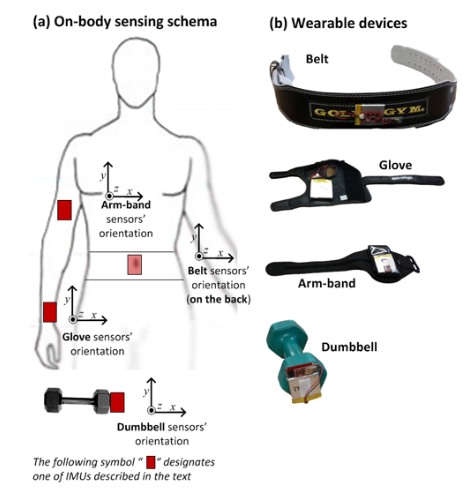
Velloso et al. (2013)
ggplot in R and Python
The grammar of graphics package (ggplot2) is the best data visualization library in R. The concept of grammar of graphics is also implemented in Python with the library ggplot and it has similar commands to ggplot2... more
Correlation map of climate variables
To understand physical mechanisms and to develop statistical rainfall prediction models, correlation analysis is used as a first step. Here, I show how to use R to generate correlation map between rainfall and sea surface temperature... more
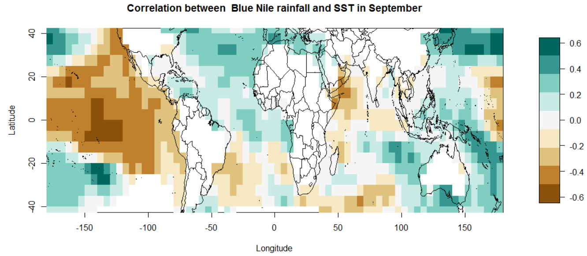
Reproducible Research with R
It is now possible to collect a large amount of data about personal movement using activity monitoring devices such as a Fitbit (http://www.fitbit.com), Nike Fuelband (http://www.nike.com/us/en_us/c/nikeplusfuelband), or Jawbone Up (https://jawbone.com/up). These type of devices are part of the “quantified self” movement – a group of enthusiasts who take measurements about themselves regularly to improve their health, to find patterns in their behavior, or because they are tech... more
Downloading data from the web using R
There are different ways that we can download and read data into R. Some examples are shown... more
Analysing Google scholar with R
We can analyse a Google scholar account using R. Some of the analysis we can perfom include getting total number of publications and citations and trend of citations and publications... more
Slidify presentation of a Shiny App
Slidify helps to create data-centric presentations. It allows embedded code chunks and mathematical formulas to be rendered correctly. Final products are HTML files, which can be viewed with any web browser and shared easily.
Shiny is an R package that makes it easy to build interactive web applications straight from R. Here I have developed a shiny app that calculates the area average rainfall and temperature climatologies and trend over any region selected by the user over Africa (see presentation).
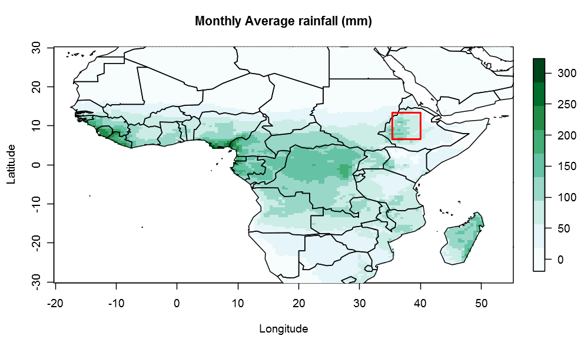Composite analysis to capture non-linear relationships
Though correlation is able to capture linear relationships, since it does not handle non-linear relationships, composite analysis is also widely used to understand physical mechanisms and to develop statistical rainfall prediction models. Here, I show how to use R to generate composites of rainfall based on sea surface temperature... more.
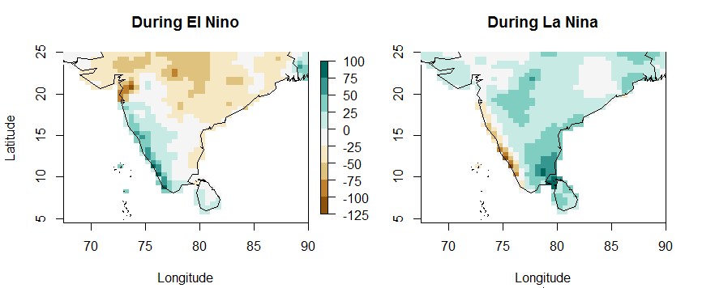Most Harmful Storms and Weather Events In The United States
This report seeks to investigate storms and other weather events that cause the highest number of fatalities and injuries. Moreover, it shows which events have the greatest economic consequences... more.
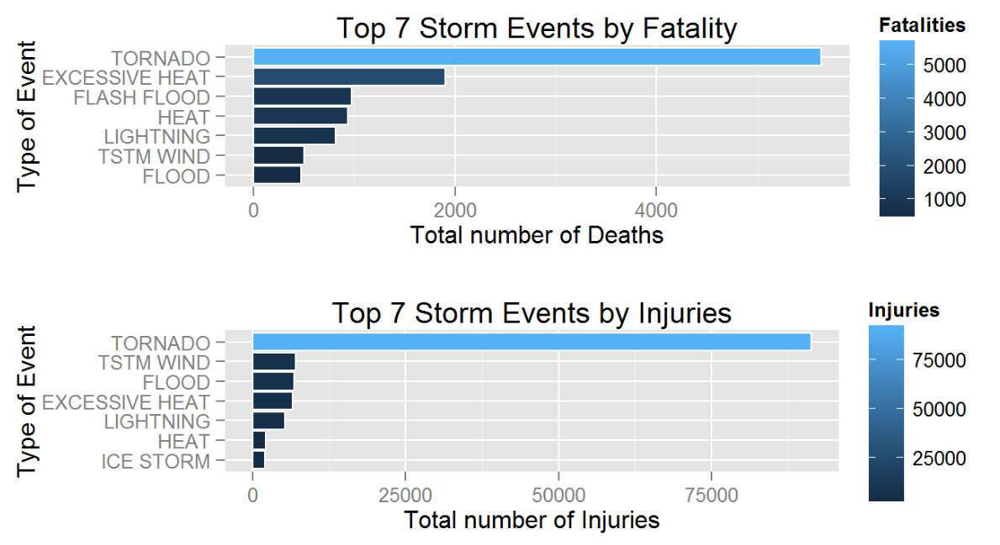Hospital Rankings In The United States
Here, I compare the performance of hospitals in the USA using data that come from the Hospital Compare web site (http://hospitalcompare.hhs.gov) run by the U.S. Department of Health and Human Services. Hospital rankings are performed on state-wide and nation-wise basis considering different outcomes... more.

Car Fuel Efficiency and Transmission Type
In this analysis, the relationship between a set of variables and miles per gallon (MPG) is explored using the mtcars dataset. Particularly, the MPG difference between automatic and manual transmissions is evaluated and quantified using multivariate linear regression models... more.
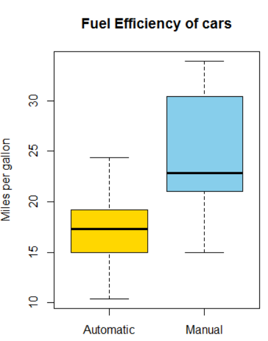
The Role of Regular Expressions in Creating a Tidy Data
In this analysis, let's prepare a tidy data that can be used for later analysis employing regular expressions in R and demonstrate the strength of regular expressions... more.
World's Biggest Companies
Let's visualize the distribution of the world's biggest companies using the Forbes2000 data from HSAUR2 package... more.
Approximating distributions
Here, let's see the approximation of some distributions by other distributions, when certain criteria are met, through simulations... more.
Predicting Earnings from census data
In this problem, we are going to use census information about an individual to predict how much a person earns -- in particular, whether the person earns more than $50,000 per year... more.
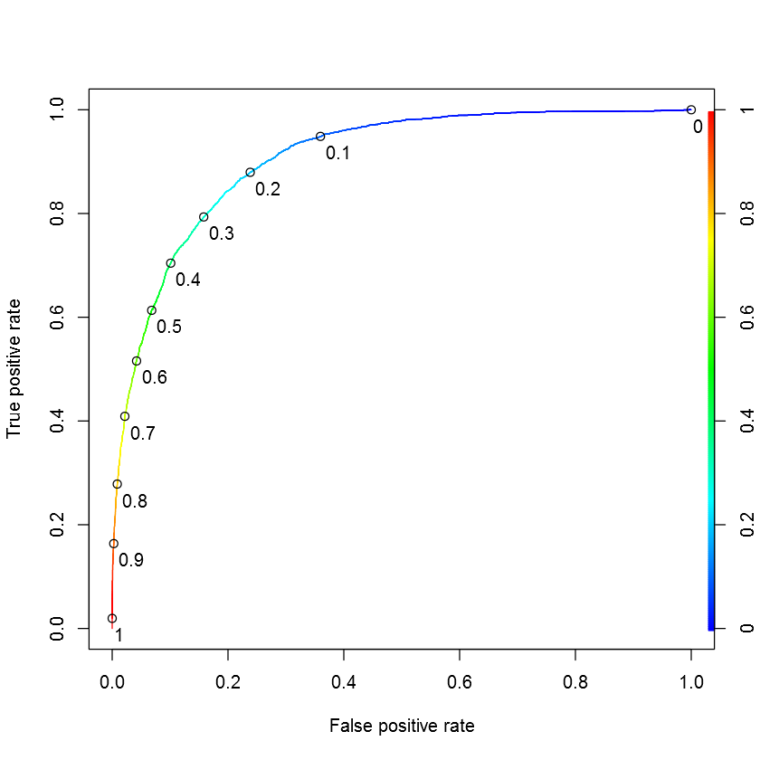Letter Recognition
This is letter recognition exercise using tree-based models... more.
Quick overview of climate trends using Shiny
Global climate is changing and this change is apparent across a wide range of observations. The impacts of climate change on rainfall and temperature varies from region to region. Shiny, which is an R package that makes it easy to build interactive web applications (apps) straight from R, can be used to see the trends of different climate variables over different parts of the world very quickly. Here, I developed a Shiny App that displays the trends of temperature and rainfall over any selected region over Africa. This app can be used as a starting point in studying impacts of, adaptation to and mitigation of climate change over a region. The app is available on RStudio.
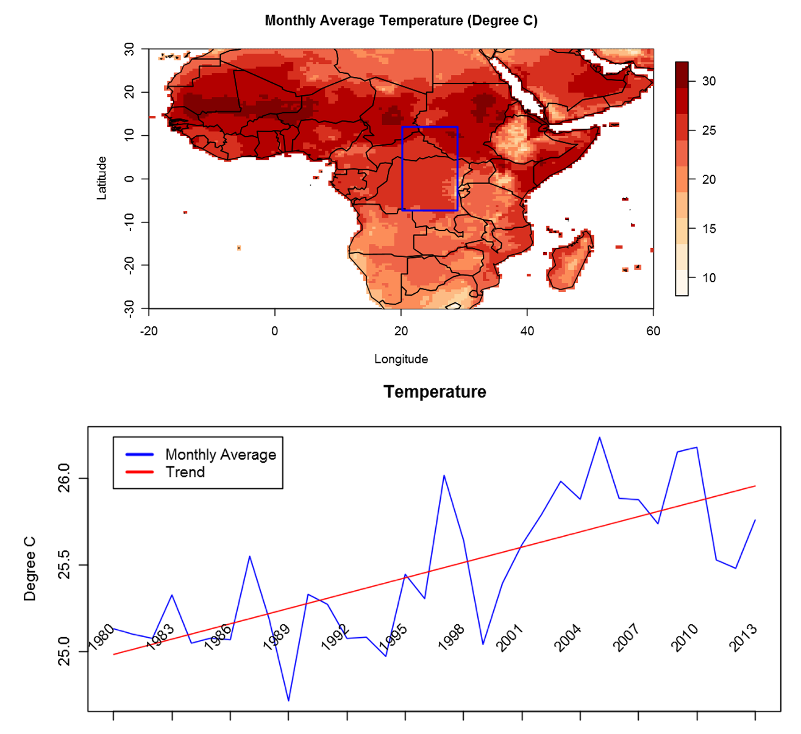Working with Dates and Times in R using Power Consumption Data
Here data from the UC Irvine Machine Learning Repository, a popular repository for machine learning datasets, is used to show how to work with dates in R... more.

Text Analytics with R
This lab is on text analytics with R using logistic regression and regression trees... more.
Visualizing election predictions using ggplot2
Here, ggplot2 is used to visualize US presidential election predictions... more.
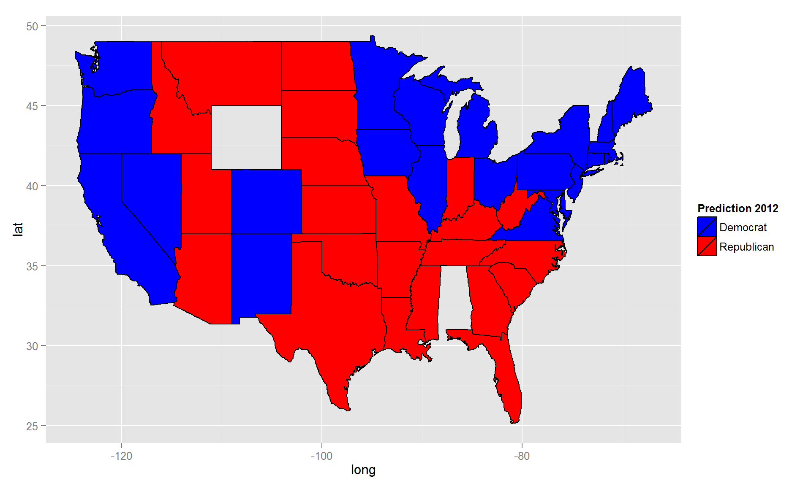Visualizing murder rates by state in the US with ggplot2
Let's visualize murder rate by state in the US using ggplot2... more.
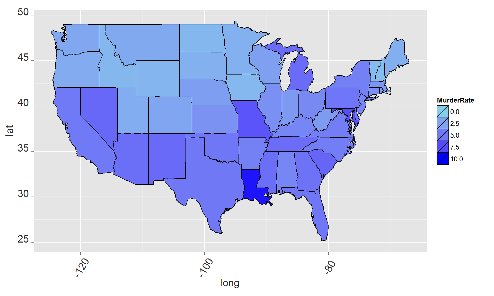Using simulation to demosntrate the Central Limit Theorem
Central limit theorem (CLT) states that the arithmetic mean of a sufficiently large number of iterates of independent random variables, each with a well-defined expected value and well-defined variance, will be approximately normally distributed, regardless of the underlying distribution (Wikipedia). Here, I demonstrate this theorem using simulations... more.
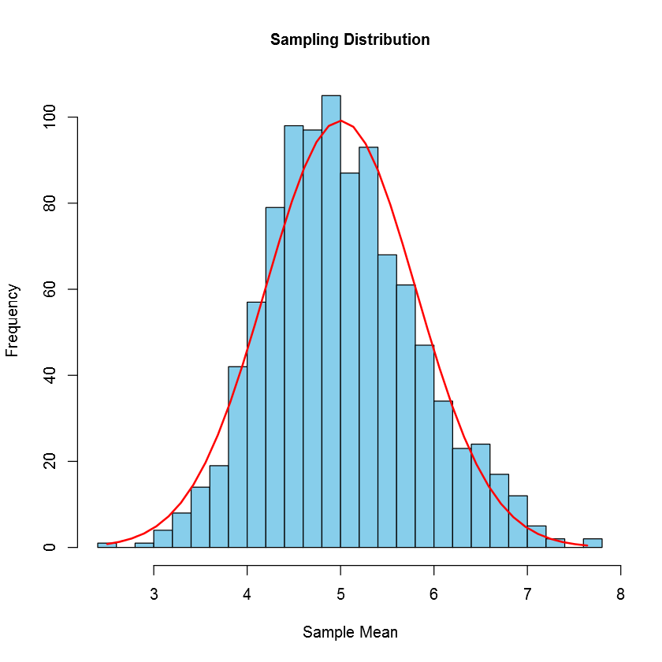